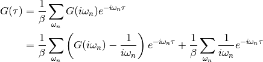

dmft.twosite¶
Two Site Dynamical Mean Field Theory¶
The two site DMFT approach given by M. Potthoff [Potthoff2001] on how to treat the impurity bath as a sigle site of the DMFT. Work is around a single impurity Anderson model.
| [Potthoff2001] |
|
DMFT solver for an impurity and a single bath site
Functions¶
-
dmft.twosite.diagonalize(operator)¶ diagonalizes single site Spin Hamiltonian
-
dmft.twosite.dmft_loop(u_int=array([ 0., 0.05, 0.1, 0.15, 0.2, 0.25, 0.3, 0.35, 0.4, 0.45, 0.5, 0.55, 0.6, 0.65, 0.7, 0.75, 0.8, 0.85, 0.9, 0.95, 1., 1.05, 1.1, 1.15, 1.2, 1.25, 1.3, 1.35, 1.4, 1.45, 1.5, 1.55, 1.6, 1.65, 1.7, 1.75, 1.8, 1.85, 1.9, 1.95, 2., 2.05, 2.1, 2.15, 2.2, 2.25, 2.3, 2.35, 2.4, 2.45, 2.5, 2.55, 2.6, 2.65, 2.7, 2.75, 2.8, 2.85, 2.9, 2.95, 3., 3.05, 3.1, 3.15]), axis='real', beta=100000.0, hop=0.5, hyb=0.4)¶ Perform a DMFT loop for the half-filled case of the Two site formulation
Examples using dmft.twosite.dmft_loop¶


-
dmft.twosite.expected_value(operator, eig_values, eig_states, beta)¶ Calculates the average value of an observable it requires that states and operators have the same base
-
dmft.twosite.gf_lehmann(eig_e, eig_states, d_dag, beta, omega, d=None, cut=1e-06)¶ Outputs the lehmann representation of the greens function omega has to be given, as matsubara or real frequencies
-
dmft.twosite.gw_invfouriertrans(g_iwn, tau, w_n, tail_coef=(1.0, 0.0, 0.0))¶ Performs an inverse fourier transform of the green Function in which only the imaginary positive matsubara frequencies
 with
with  are used.
The high frequency tails are transformed analytically up to the third moment.
are used.
The high frequency tails are transformed analytically up to the third moment.Output is the real valued positivite imaginary time green function. For the positive time output
 .
Array sizes need not match between frequencies and times, but a time array
twice as dense is recommended for best performance of the Fast Fourrier
transform.
.
Array sizes need not match between frequencies and times, but a time array
twice as dense is recommended for best performance of the Fast Fourrier
transform.
Parameters: - g_iwn (real float array) – Imaginary time interacting Green function
- tau (real float array) – Imaginary time points
- w_n (real float array) – fermionic matsubara frequencies. Only use the positive ones
- tail_coef (list of floats size 3) – The first moments of the tails
Returns: Interacting Greens function in matsubara frequencies
Return type: complex ndarray
See also
gt_fouriertrans(),freq_tail_fourier()
-
dmft.twosite.m2_weight(t)¶ Calculates the
 which is the
variance of the non-interacting density of states of a Bethe Lattice
which is the
variance of the non-interacting density of states of a Bethe Lattice
-
dmft.twosite.matsubara_Z(im_sigma, beta)¶ Calculates the impurity quasiparticle weight from the imaginary part of the self energy in the matsubara frequencies
Examples using dmft.twosite.matsubara_Z¶


-
dmft.twosite.matsubara_freq(beta=16.0, size=256, fer=1)¶ Calculates an array containing the matsubara frequencies under the formula

where
 in the case of fermions, and zero for bosons
in the case of fermions, and zero for bosonsParameters: - beta (float) – Inverse temperature of the system
- size (integer) – size of the array : amount of matsubara frequencies
- fer (0 or 1 integer) – dealing with fermionic particles
Returns: Return type: real ndarray
-
dmft.twosite.quad(func, a, b, args=(), full_output=0, epsabs=1.49e-08, epsrel=1.49e-08, limit=50, points=None, weight=None, wvar=None, wopts=None, maxp1=50, limlst=50)¶ Compute a definite integral.
Integrate func from a to b (possibly infinite interval) using a technique from the Fortran library QUADPACK.
Parameters: - func ({function, scipy.LowLevelCallable}) –
A Python function or method to integrate. If func takes many arguments, it is integrated along the axis corresponding to the first argument.
If the user desires improved integration performance, then f may be a scipy.LowLevelCallable with one of the signatures:
double func(double x) double func(double x, void *user_data) double func(int n, double *xx) double func(int n, double *xx, void *user_data)
The
user_datais the data contained in the scipy.LowLevelCallable. In the call forms withxx,nis the length of thexxarray which containsxx[0] == xand the rest of the items are numbers contained in theargsargument of quad.In addition, certain ctypes call signatures are supported for backward compatibility, but those should not be used in new code.
- a (float) – Lower limit of integration (use -numpy.inf for -infinity).
- b (float) – Upper limit of integration (use numpy.inf for +infinity).
- args (tuple, optional) – Extra arguments to pass to func.
- full_output (int, optional) – Non-zero to return a dictionary of integration information. If non-zero, warning messages are also suppressed and the message is appended to the output tuple.
Returns: - y (float) – The integral of func from a to b.
- abserr (float) – An estimate of the absolute error in the result.
- infodict (dict) – A dictionary containing additional information. Run scipy.integrate.quad_explain() for more information.
- message – A convergence message.
- explain – Appended only with ‘cos’ or ‘sin’ weighting and infinite integration limits, it contains an explanation of the codes in infodict[‘ierlst’]
Other Parameters: - epsabs (float or int, optional) – Absolute error tolerance.
- epsrel (float or int, optional) – Relative error tolerance.
- limit (float or int, optional) – An upper bound on the number of subintervals used in the adaptive algorithm.
- points ((sequence of floats,ints), optional) – A sequence of break points in the bounded integration interval where local difficulties of the integrand may occur (e.g., singularities, discontinuities). The sequence does not have to be sorted.
- weight (float or int, optional) – String indicating weighting function. Full explanation for this and the remaining arguments can be found below.
- wvar (optional) – Variables for use with weighting functions.
- wopts (optional) – Optional input for reusing Chebyshev moments.
- maxp1 (float or int, optional) – An upper bound on the number of Chebyshev moments.
- limlst (int, optional) – Upper bound on the number of cycles (>=3) for use with a sinusoidal weighting and an infinite end-point.
See also
dblquad()- double integral
tplquad()- triple integral
nquad()- n-dimensional integrals (uses quad recursively)
fixed_quad()- fixed-order Gaussian quadrature
quadrature()- adaptive Gaussian quadrature
odeint()- ODE integrator
ode()- ODE integrator
simps()- integrator for sampled data
romb()- integrator for sampled data
scipy.special()- for coefficients and roots of orthogonal polynomials
Notes
Extra information for quad() inputs and outputs
If full_output is non-zero, then the third output argument (infodict) is a dictionary with entries as tabulated below. For infinite limits, the range is transformed to (0,1) and the optional outputs are given with respect to this transformed range. Let M be the input argument limit and let K be infodict[‘last’]. The entries are:
- ‘neval’
- The number of function evaluations.
- ‘last’
- The number, K, of subintervals produced in the subdivision process.
- ‘alist’
- A rank-1 array of length M, the first K elements of which are the left end points of the subintervals in the partition of the integration range.
- ‘blist’
- A rank-1 array of length M, the first K elements of which are the right end points of the subintervals.
- ‘rlist’
- A rank-1 array of length M, the first K elements of which are the integral approximations on the subintervals.
- ‘elist’
- A rank-1 array of length M, the first K elements of which are the moduli of the absolute error estimates on the subintervals.
- ‘iord’
- A rank-1 integer array of length M, the first L elements of
which are pointers to the error estimates over the subintervals
with
L=KifK<=M/2+2orL=M+1-Kotherwise. Let I be the sequenceinfodict['iord']and let E be the sequenceinfodict['elist']. ThenE[I[1]], ..., E[I[L]]forms a decreasing sequence.
If the input argument points is provided (i.e. it is not None), the following additional outputs are placed in the output dictionary. Assume the points sequence is of length P.
- ‘pts’
- A rank-1 array of length P+2 containing the integration limits and the break points of the intervals in ascending order. This is an array giving the subintervals over which integration will occur.
- ‘level’
- A rank-1 integer array of length M (=limit), containing the
subdivision levels of the subintervals, i.e., if (aa,bb) is a
subinterval of
(pts[1], pts[2])wherepts[0]andpts[2]are adjacent elements ofinfodict['pts'], then (aa,bb) has level l if|bb-aa| = |pts[2]-pts[1]| * 2**(-l). - ‘ndin’
- A rank-1 integer array of length P+2. After the first integration over the intervals (pts[1], pts[2]), the error estimates over some of the intervals may have been increased artificially in order to put their subdivision forward. This array has ones in slots corresponding to the subintervals for which this happens.
Weighting the integrand
The input variables, weight and wvar, are used to weight the integrand by a select list of functions. Different integration methods are used to compute the integral with these weighting functions. The possible values of weight and the corresponding weighting functions are.
weightWeight function used wvar‘cos’ cos(w*x) wvar = w ‘sin’ sin(w*x) wvar = w ‘alg’ g(x) = ((x-a)**alpha)*((b-x)**beta) wvar = (alpha, beta) ‘alg-loga’ g(x)*log(x-a) wvar = (alpha, beta) ‘alg-logb’ g(x)*log(b-x) wvar = (alpha, beta) ‘alg-log’ g(x)*log(x-a)*log(b-x) wvar = (alpha, beta) ‘cauchy’ 1/(x-c) wvar = c wvar holds the parameter w, (alpha, beta), or c depending on the weight selected. In these expressions, a and b are the integration limits.
For the ‘cos’ and ‘sin’ weighting, additional inputs and outputs are available.
For finite integration limits, the integration is performed using a Clenshaw-Curtis method which uses Chebyshev moments. For repeated calculations, these moments are saved in the output dictionary:
- ‘momcom’
- The maximum level of Chebyshev moments that have been computed,
i.e., if
M_cisinfodict['momcom']then the moments have been computed for intervals of length|b-a| * 2**(-l),l=0,1,...,M_c. - ‘nnlog’
- A rank-1 integer array of length M(=limit), containing the
subdivision levels of the subintervals, i.e., an element of this
array is equal to l if the corresponding subinterval is
|b-a|* 2**(-l). - ‘chebmo’
- A rank-2 array of shape (25, maxp1) containing the computed Chebyshev moments. These can be passed on to an integration over the same interval by passing this array as the second element of the sequence wopts and passing infodict[‘momcom’] as the first element.
If one of the integration limits is infinite, then a Fourier integral is computed (assuming w neq 0). If full_output is 1 and a numerical error is encountered, besides the error message attached to the output tuple, a dictionary is also appended to the output tuple which translates the error codes in the array
info['ierlst']to English messages. The output information dictionary contains the following entries instead of ‘last’, ‘alist’, ‘blist’, ‘rlist’, and ‘elist’:- ‘lst’
- The number of subintervals needed for the integration (call it
K_f). - ‘rslst’
- A rank-1 array of length M_f=limlst, whose first
K_felements contain the integral contribution over the interval(a+(k-1)c, a+kc)wherec = (2*floor(|w|) + 1) * pi / |w|andk=1,2,...,K_f. - ‘erlst’
- A rank-1 array of length
M_fcontaining the error estimate corresponding to the interval in the same position ininfodict['rslist']. - ‘ierlst’
- A rank-1 integer array of length
M_fcontaining an error flag corresponding to the interval in the same position ininfodict['rslist']. See the explanation dictionary (last entry in the output tuple) for the meaning of the codes.
Examples
Calculate
 and compare with an analytic result
and compare with an analytic result>>> from scipy import integrate >>> x2 = lambda x: x**2 >>> integrate.quad(x2, 0, 4) (21.333333333333332, 2.3684757858670003e-13) >>> print(4**3 / 3.) # analytical result 21.3333333333
Calculate

>>> invexp = lambda x: np.exp(-x) >>> integrate.quad(invexp, 0, np.inf) (1.0, 5.842605999138044e-11)
>>> f = lambda x,a : a*x >>> y, err = integrate.quad(f, 0, 1, args=(1,)) >>> y 0.5 >>> y, err = integrate.quad(f, 0, 1, args=(3,)) >>> y 1.5
Calculate
 with ctypes, holding
y parameter as 1:
with ctypes, holding
y parameter as 1:testlib.c => double func(int n, double args[n]){ return args[0]*args[0] + args[1]*args[1];} compile to library testlib.*
from scipy import integrate import ctypes lib = ctypes.CDLL('/home/.../testlib.*') #use absolute path lib.func.restype = ctypes.c_double lib.func.argtypes = (ctypes.c_int,ctypes.c_double) integrate.quad(lib.func,0,1,(1)) #(1.3333333333333333, 1.4802973661668752e-14) print((1.0**3/3.0 + 1.0) - (0.0**3/3.0 + 0.0)) #Analytic result # 1.3333333333333333
- func ({function, scipy.LowLevelCallable}) –
-
dmft.twosite.refine_mat_solution(end_solver, u_int)¶ Takes the end converged dmft solver in matsubara frequencies and increases the range of the matsubara frequencies to get nicer plots
Examples using dmft.twosite.refine_mat_solution¶

Classes¶
-
class
dmft.twosite.TwoSite(beta, t)¶ Base class for a two site DMFT solver Sets up environment
Parameters: -
GF¶ dictionary – Stores the Green functions and self energy
-
double_ocupation()¶ Calculates the double ocupation of the impurity
-
expected(observable)¶ Wrapper to the expected_value function to fix the eigenbasis
-
hamiltonian()¶ Two site single impurity anderson model generate the matrix operators that will be used for this hamiltonian
-
hyb_V()¶ Returns the hybridization parameter
-
imp_free_gf(e_c, hyb)¶ Outputs the Green’s Function of the free propagator of the impurity
-
ocupations(top=2)¶ gets the ocupation of the impurity
-
solve(e_c, u_int, hyb)¶ Solves the impurity problem
-
update_H(e_c, u_int, hyb)¶ Updates impurity hamiltonian and diagonalizes it
-
-
class
dmft.twosite.TwoSite_Matsubara(beta=100, t=1, nfreq=20)¶ DMFT solver on the matsubara frequency axis